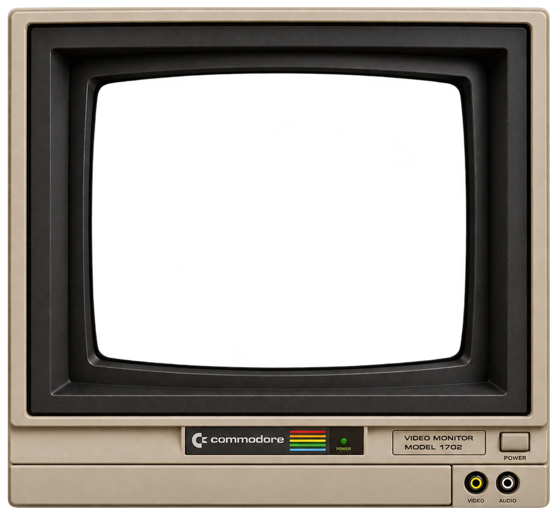

16 colors is all you need!

Up and Down select a video. Return plays it. Space pauses or resumes. Escape returns to the list.
UPIC by Aleksi Eeben · Color selection and dithering by Joel Yliluoma (Bisqwit).
Loading player…